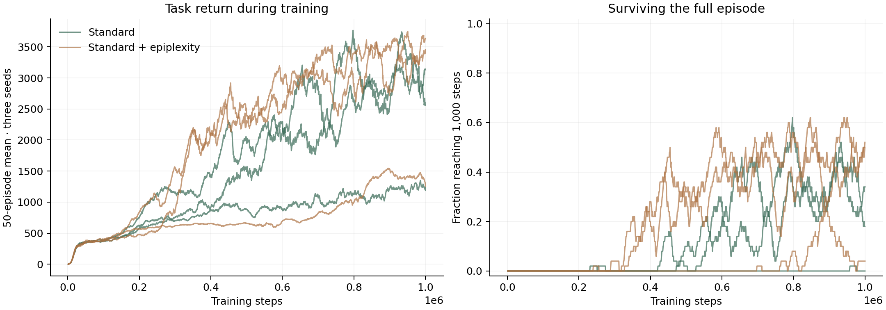

Standard
Task rewardLoading…MP4 ↓
WALKER2D · SB3 ZOO
Same PPO. Same seeds.
One extra reward.
Real speed. Falls are held and labeled until the next matched trial.
FINAL TASK RETURN · THREE SEEDS
Standard vs + epiplexity · mean ± SD
FULL EPISODES
Reaching all 1,000 steps without falling
BUDGET
Per condition, per seed

Zoo’s Walker2d-v4 PPO recipe applied to v5. Both conditions normalize observations and rewards. The mixed run adds a fixed, calibrated epiplexity bonus before normalization. Final evaluation uses 100 matched episodes per policy; all three training seeds are reported. Three seeds do not establish a general improvement.
Intermediate videos are available for seeds 0 and 1. The viewer opens seed 1, chosen as a walking example after the 500k check; aggregate scores include every seed. Every policy is trained from scratch. Full-episode survival alone does not prove a walking gait; inspect the motion alongside the scores.